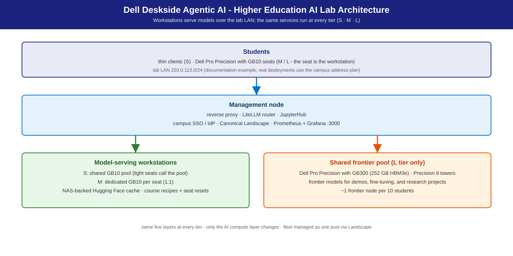
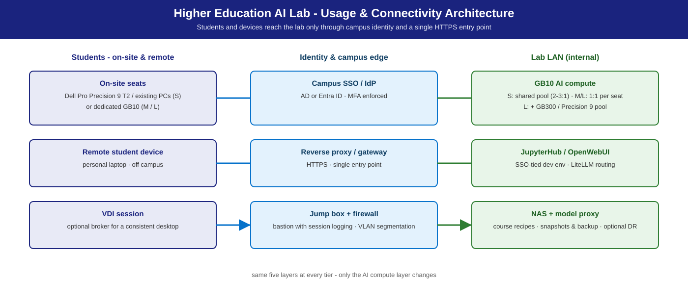

Higher Education AI Lab
A repeatable design for university AI teaching labs on Dell deskside hardware — multi-cohort teaching: coding agents, video search & summarization, and agent runtimes.
Summary
Universities need AI compute close to the classroom, manageable by campus IT, and strong enough for modern coursework. This template serves models in vLLM containers on Dell deskside workstations; students connect over the lab LAN with OpenAI-compatible clients, and course lifecycle is a fleet operation — one managed fleet serves many courses (N×M scheduling) with fast state reset between classes. It wraps three NVIDIA playbooks and cross-links the sibling solutions supplying the course modules: Agentic Coding (coding agents), Agentic Video Search & Summarization (video search & summarization), and OpenClaw on NemoClaw (agent runtimes; advanced modules via Hermes on NemoClaw).
Reference design. Pool sizing comes from measured ladders on the same hardware (Benchmarks & performance); your pilot observations tune it.
Personas
| Persona | What this solution gives them |
|---|---|
| IT Admin | Lab architecture, fleet management (Landscape ), imaging, NAS, identity, semester playbook — IT-Admin Guide. |
| Faculty / department | Course profiles, N×M scheduling, app stack, curriculum progression by tier. |
| AI engineer / lab admin | Model serving, LiteLLM routing, GB10 pooling — Developer Deploy Guide. |
| Institutional leadership | Sizing comparison, TCO framework, phased roadmap. |
More: Personas.
Reference NVIDIA playbooks
| Playbook | Platform | What Dell adds |
|---|---|---|
| CLI Coding Agent | DGX Spark (GB10) | Multi-seat serving, course profiles, sizing — module in Agentic Coding |
| Run NemoClaw with a Local LLM | DGX Spark (GB10) | Per-student agent runtime + sandbox, reset between classes — module in OpenClaw on NemoClaw |
| Video Search & Summarization blueprint | Spark / RTX PRO / GB300 | Classroom-scale VSS module, public images, VLM + LLM local — module in Agentic Video Search & Summarization |
The RTX Local AI hub covers the discrete RTX PRO options used by the M-tier shared amplifier.
Use cases
Teaching scenarios on a 30-seat reference lab:
| Teaching scenario | Tier | Cohort / sizing | What it looks like |
|---|---|---|---|
| Intro AI / ML coursework | S | 30 students, 10–15 serving GB10s (2–3:1) | JupyterHub notebooks on a shared vLLM endpoint; prompt engineering, RAG, light fine-tuning. |
| Dedicated AI teaching lab | M | 30 seats, 1:1 | Each seat is a Dell Pro Precision with GB10 (128 GB unified); local development, zero contention. |
| Coding-agent / multi-agent coursework | M | 1:1 seats | Per-student CLI coding agents (Agentic Coding) or agent runtime + sandbox (NemoClaw). |
| Graduate research / fine-tuning | L | 30 seats + shared pool (~1:10) | Frontier pool for fine-tuning and dense-model assignments. |
| Video-understanding coursework | L | shared pool | VSS teaching module on the shared compute (Agentic Video Search & Summarization). |
| Cross-departmental + remote | S | N courses × M seats, one fleet | CS one hour, digital humanities the next; reset between classes. Remote cohorts join via reverse proxy or campus VDI broker. |
Course profiles cover: notebook + local LLM · multi-model comparison (via
LiteLLM) · fine-tuning (Unsloth Studio) · RAG (nomic-embed-text) · creative
(ComfyUI + FLUX.1-dev / SDXL) · multimedia (Whisper large-v3).
What this template is not: hardware procurement; a curriculum (faculty pick content); a research-cluster substitute (L shared compute is classroom-scale).
Architecture

Usage and connectivity — students and devices reach the lab only through campus identity and one HTTPS entry point (view as published in the launch brochure):

Lab topology — workstations serve models over the lab LAN (doc-example range 203.0.113.0/24; real deployments use the campus address plan):
Students: thin clients (S) · GB10 seats (M/L — the seat is the workstation)
│ lab LAN 203.0.113.0/24 (doc example)
▼
Management node — reverse proxy · LiteLLM router · JupyterHub
(campus SSO/IdP · Landscape · Prometheus + Grafana :3000)
│
┌──────┴──────────────────────────────┐
▼ ▼
Model-serving workstations Shared frontier pool (L only)
GB10 pool / seats · optional Dell Pro Precision with GB300 (~1:10)
Precision 9 T4/T6 RTX PRO 6000 vLLM · public images
(multi-instance or TP)
│
▼
NAS / NFS — weights · datasets · course profiles · home dirs
(model proxy/cache · snapshots for between-class reset)
Shared infra (all tiers): NAS/NFS + model proxy/cache · Landscape fleet management · campus SSO/IdP (LDAP/AD) · optional remote access (proxy / jump host / VDI broker).
S / M / L sizing
Tiers differ by seat ratio and serving topology, not by stack (S/M/L Sizing).
| Tier | Lab model | Dell systems | Model (default · alt) | Expected |
|---|---|---|---|---|
| S | Shared serving pool + thin clients | Dell Pro Precision with GB10 (128 GB unified) ×N, 2–3 students per node | Nemotron 3.5 Lightning 30B A3B · alt Qwen3.8 27B (+ MTP) | 1 vLLM per GB10 behind LiteLLM; interactive at 2–3 students/node (measured GB10 ladders below) |
| M | 1:1 seats | Dell Pro Precision with GB10 per seat — the workstation is the endpoint; optional Dell Pro Precision 9 T4 (RTX PRO 6000, multi-instance or TP) shared amplifier | Nemotron 3.5 Super VL · alt Qwen3.8-Flash-Next | per-seat local serving; optional shared T4/T6 amplifier |
| L | 1:1 seats + shared frontier pool | GB10 seats + Dell Pro Precision with GB300 (252 GB HBM3e, aarch64), ~1 per 10 students | Nemotron 3.5 Super VL · alt GLM-5.3-Flash | shared frontier pool (GB300 session envelope at a 20 tok/s/session floor — Agentic Coding) |
All NVFP4. Rule of thumb (inherited from the measured Agentic Coding S-tier baseline): one GB10 comfortably serves 2–3 concurrent notebook students at interactive latency — a 30-seat lab wants 10–15 GB10s in the pool. App stack: JupyterHub, OpenWebUI, vLLM/Ollama on all tiers; Unsloth Studio, ComfyUI, OpenCode on M/L seats; LiteLLM routing on S/L pools.
Model recommendation
Per-course model choice, not one model for every course; pin the default and route alternatives through LiteLLM (one endpoint per student, routing by API key / course group).
- Default (S, all coursework): Nemotron 3.5 Lightning 30B A3B NVFP4
(card)
— instruction, coding, RAG; runs on every tier. Reasoning model: clients
need
max_tokens >= 512. M/L shared serving default: Nemotron 3.5 Super VL; Lightning is the measured alternative. - Alts, same API: S / coding-heavy CS — Qwen3.8 27B NVFP4 (card); M / shared amplifier — Qwen3.8-Flash-Next NVFP4 (card); L / frontier coursework — GLM-5.3-Flash NVFP4 (card), a 320B-total MoE on one 252 GB GB300.
- Comparison labs: Gemma 4 26B A4B and Gemma 4 31B (dense), side by
side via LiteLLM. RAG:
nomic-embed-text+ the default chat model. - VSS teaching module: Nemotron 3 Nano Omni (VLM) + Lightning (LLM), both
local on public
vllm/vllm-openaiimages — Agentic Video Search & Summarization. - Creative / multimedia: FLUX.1-dev / SDXL (ComfyUI), Whisper large-v3.
Inference stack
vLLM (preferred) — OpenAI-compatible, public vllm/vllm-openai images
(docs.vllm.ai). Ollama is the per-seat developer
quick-start; LiteLLM fronts shared pools for multi-model routing. Reference:
Inference Stack & Models.
Deployment recipes
Catalog: docs/recipes/ ·
Dell Deskside Agentic AI Solutions.
| Platform | Recipe (under recipes/) |
Lab role |
|---|---|---|
| GB10 | gb10/vllm/docker-nemotron-3.5-lightning-nvfp4.sh |
S pool · M/L seats |
| GB10 | gb10/vllm/docker-qwen3.8-27b-nvfp4.sh |
coding-heavy courses (S alt) |
| Precision | precision/vllm/docker-nemotron-3.5-lightning-nvfp4.sh |
shared amplifier, multi-instance or TP |
| Precision | precision/vllm/docker-qwen3.8-flash-next-nvfp4.sh |
M-tier alt |
| GB300 | gb300/vllm/docker-nemotron-3.5-lightning-nvfp4.sh |
L shared pool (measured fallback) |
| GB300 | gb300/vllm/docker-glm-5.3-flash-nvfp4.sh |
L-tier alt (frontier) |
Commands in this guide run from the repository root (git clone this repo and cd into it).
recipes/gb10/vllm/docker-nemotron-3.5-lightning-nvfp4.sh --port 8000
curl -s http://localhost:8000/v1/models
JupyterHub / OpenWebUI / VSS classroom profiles run as inline Compose in the dev guide. Guides — pilot: Developer Deploy Guide · semester rollout: IT-Admin Guide.
Management environment
- Fleet: Canonical Landscape — golden image, patching, per-course profile push; rollouts run without SSH.
- Identity: campus SSO / IdP (AD, Entra ID, LDAP) with per-course group scoping; students never see a raw serving port.
- Monitoring: Prometheus + Grafana (
:3000) + DCGM — GPU use, vLLM queue depth, storage growth, fleet health. - Course lifecycle (N×M): container reset ~2 s (profile / model swap) · LVM snapshot restore ~30 s (home dirs) · autoinstall re-image 3–5 min (end of term).
Benchmarks & performance (validation)
Classroom sizing is derived from measured ladders on the same hardware rather than a replay of a 30-seat class: the S pool from the GB10 ladders (Lightning chat: ~44 tok/s per session alone, ~31 at four concurrent sessions), the L pool from the GB300 ladders (Super VL chat: ~74 tok/s per session at 32 concurrent). Reset times depend on your storage (a container reset takes seconds; see the IT-Admin Guide for snapshot restore and re-image). The measured Agentic Coding S-tier baseline (GB10, 200/200 chat, prior reference model; Agentic Coding) is kept below for pool sizing:
| Concurrent students | TTFT p50 | Notes |
|---|---|---|
| 1 | ~113 ms | Excellent |
| 4 | ~267 ms | Good — interactive coding |
| 8 | ~348 ms | Acceptable — light lag on first token |
| 16 | ~583 ms | Marginal — add a second GB10 to the pool |
Cost & TCO
Indicative BOM cost ratios for a 30-seat lab (order-of-magnitude planning, not quotes):
| Component | S | M | L |
|---|---|---|---|
| Compute | 1.0× | 3.0× | 4.5× |
| Storage + network | 0.3× | 0.3× | 0.5× |
| Ops / management | 0.5× | 0.3× | 0.5× |
| Total | ~1.8× | ~3.6× | ~5.5× |
Storage planning (30 seats, one term, indicative): weights 200–500 GB on NAS · datasets 100–200 GB/course · home dirs 20–40 GB × 30 · +25 % snapshot overhead → ~2–3 TB usable NAS. S is cheapest at the cost of contention; M removes contention at ~2× S compute; L adds fine-tuning and frontier coursework at ~1.5× M compute.
Dependencies & risk factors
- Dependencies: the three upstream playbooks; vLLM public images on GB10 / Precision / GB300; Hugging Face access (or a pre-seeded model proxy) for first weight pull; campus IdP; Landscape.
- Risk factors: model lineup refreshes with the open-weights cadence; undersized S pools degrade TTFT under concurrent use — plan from the inherited ladder and pilot observations.